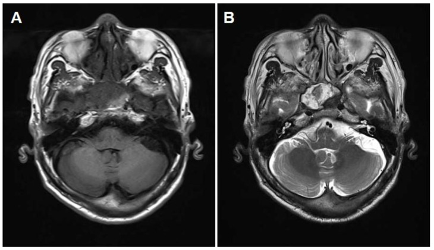
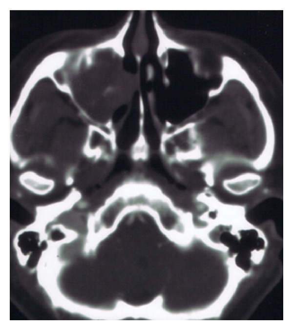
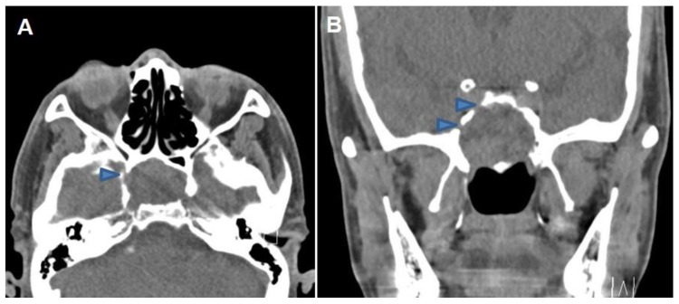
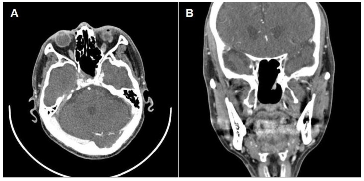

3051 — Máu tụ tổ chức hóa trong xoang bướm: khối lành tính hay bị mổ như ung thư
Tags: pattern:khoi-xoang pattern:mau-tu-to-chuc-hoa pattern:chay-mau-cam pattern:mo-xuong vung:xang-buom vung:dau-co anatomy:thanh-xoang-buom protocol:MRI-xoang protocol:CTA
Mức chắc chắn (certainty): tổng hợp y văn (literature synthesis) — ghép ca xoang bướm có mất thị lực hồi phục sau mổ (Medicina 2023, PMC10608076), ca xoang bướm 24 tuổi chảy máu cam 1 tháng (Radiol Case Rep 2024, PMC10801137), ca xoang hàm 82 tuổi (Radiol Case Rep 2023, PMC10597775), loạt 5 ca có mô bệnh – hóa mô miễn dịch (Int J Otolaryngol 2013, PMC3606777) và ca xoang bướm có liệt dây sọ (Oncol Lett 2016, PMC4887761 — chỉ dẫn link, ảnh CC BY-NC-ND). Không có ca do nhóm tự chụp.
Câu hỏi thực hành: nam 69 tuổi, mờ mắt phải từng cơn, nội soi – CT thấy khối mô mềm dãn rộng xoang bướm phải, mòn thành xương; đã mổ mở xoang bướm một lần trước đó mà khối vẫn to thêm. Câu hỏi: khối này là ung thư hay lành tính, có được sinh thiết/hút một phần không, và vì sao phải chụp mạch trước khi đụng vào? Bài chốt ba quyết định: (1) nhận ra "khối xoang bướm mòn xương + chảy máu cam tái phát" có thể là máu tụ tổ chức hóa — lành tính; (2) loại túi mạch (giả phình động mạch cảnh trong) TRƯỚC mọi can thiệp; (3) điều trị đúng là lấy TOÀN BỘ + đốt mạch nuôi, không phải hút hay sinh thiết một phần. Nối 3046 – Chảy máu cam ồ ạt do vỡ giả phình ĐM cảnh trong vào xoang bướm, 3050 – Tổn thương ĐM cảnh trong cấp trong mổ nội soi, 235 – Xương thái dương – xoang.
1. Tổng quan bệnh học – cơ chế hình ảnh: vì sao một cục máu lại "mọc" và ăn mòn xương
- Bản chất mô bệnh (không phải u): máu tụ tổ chức hóa (organized hematoma, OH) là tổn thương không tân sinh, cấu tạo bởi hồng cầu ở nhiều giai đoạn thoái hóa + fibrin + tổ chức hạt + xơ hóa/hyalin + mạng tân mạch giãn. Loạt 5 ca có mô bệnh – hóa mô miễn dịch cho thấy mạch giãn CD31/CD34 dương và periostin biểu hiện trong khối, không có tế bào u (Int J Otolaryngol 2013, PMC3606777). Chính mạng tân mạch mỏng, dễ vỡ này là động cơ tự duy trì của bệnh.
- Vòng xoắn sinh bệnh học (giải thích TẠI SAO khối to dần): xuất huyết vi thể lặp lại → fibrin lắng đọng → tổ chức hóa và xơ hóa → tân mạch mới càng dễ chảy máu → thêm máu và fibrin. Mỗi vòng tăng thể tích trong một xoang kín, nên khối dãn xoang và làm mòn/vát xương như một khối u — nhưng không xâm lấn mô và không di căn. Vì vậy "mòn xương" trên CT không đồng nghĩa ác tính.
- TẠI SAO viền T2 tối (dấu hiệu chốt): hemosiderin (sắt 3+) thuận từ rút ngắn T2 và T2* → viền tối đen sát niêm mạc xoang trên T2W, tương ứng nhiều đợt vi xuất huyết. Đây là dấu hiệu của máu cũ, không phải vỏ bao u.
- TẠI SAO có vùng T1 sáng: methemoglobin nội bào của máu bán cấp rút ngắn T1 → đốm/dải tăng tín hiệu T1 không cản quang, xen kẽ vùng fibrin (T1 trung tính) và huyết thanh (T1 tối). Hỗn hợp này tạo hình ảnh "hỗn hợp tín hiệu" (heterogeneous) rất đặc trưng, khác khối u đặc thường đồng nhất hơn.
- TẠI SAO gần như không ngấm thuốc ở trung tâm: lòng khối là cục máu đông + xơ không có mao mạch; chỉ tổ chức hạt ở ngoại vi ngấm thuốc → ngấm vá víu, ngoại vi (patchy peripheral enhancement), đúng như ca 69 tuổi: "khối dãn rộng, ngấm vá víu từng ổ" (Medicina 2023, PMC10608076).
- Dịch tễ – ngưỡng định lượng phải thuộc:
- Hiếm, ưu thế xoang hàm: các loạt gộp báo 15/17 (88,2%), 82/84 (97,6%) và 15/23 (65,2%) ca OH đến từ xoang hàm; xoang trán và xoang sàng mỗi nơi chỉ 1 ca (Radiol Case Rep 2024, PMC10801137).
- Xoang bướm: chỉ 5 ca được báo cáo trong y văn tính tới 2023; 3/5 ca có tổn thương thị lực và cả 3 đều không hồi phục hoàn toàn sau mổ — ca 69 tuổi trong bài là ca đầu tiên hồi phục thị lực (theo dõi 1 năm) (PMC10608076).
- Kích thước: ca xoang hàm điển hình 36 × 24 mm; loạt 5 ca có tuổi 14–56 (PMC3606777). Ca xoang bướm: 24 tuổi, chảy máu cam 1 tháng (PMC10801137); 69 tuổi, mờ mắt từng cơn < 1 phút (PMC10608076); 82 tuổi, chảy máu cam tái phát (PMC10597775).
- CT: khối tăng tỷ trọng nhẹ so với mô mềm thường, gây mòn/vát thành xoang, không có vôi hóa thô; các bài gốc không báo HU định lượng — nếu cần HU, đo trên ảnh của mình và ghi rõ là số đo nội bộ, không trích nguồn.
2. Mẫu hình + chẩn đoán phân biệt theo vị trí (gamut)
- Mẫu hình chốt: khối một bên, trong lòng xoang bướm, dãn xoang, mòn xương kiểu tái tạo (remodeling) chứ không phá hủy lan tỏa, không có túi mạch, không vôi hóa thô, MRI T1 có vùng sáng + T2 hỗn hợp + viền tối ngoại vi + ngấm vá víu.
- Gamut khối xoang bướm đơn độc (theo hình thái):
| Nhóm | Thực thể | Vì sao vào gamut |
|---|---|---|
| Máu / mạch | Máu tụ tổ chức hóa, giả phình ĐM cảnh trong, u mạch (angiofibroma) | Cùng gây chảy máu cam tái phát + khối dãn xoang; hai thực thể sau nguy hiểm nếu sinh thiết mù |
| Nhiễm | Mycetoma (bóng nấm), viêm nấm xâm lấn, lao, giang mai | Mycetoma rất tối trên T2, có vôi hóa mịn; viêm nấm xâm lấn mòn xương tiến triển nhanh ở người suy giảm miễn dịch |
| U lành | U nhú đảo ngược, u tuyến đa hình, schwannoma, meningioma lạc chỗ | U nhú đảo ngược ngấm thuốc mạnh kiểu "cuộn não", có tăng xương khu trú |
| U ác | Ung thư biểu mô vảy, adenocarcinoma, lymphoma, melanoma niêm mạc, chordoma/chondrosarcoma (từ clivus) | Phá hủy xương xâm lấn, lan màng não, liệt dây sọ tiến triển |
| Khác | Mucocele, thoát vị màng não – não, túi phình đã tắc | Mucocele T2 rất sáng, không có thành phần đặc; thoát vị có cuống qua khuyết xương |
- Gamut theo triệu chứng (dùng để hỏi bệnh):
- Chảy máu cam tái phát đơn thuần: OH, angiofibroma (nam vị thành niên), mycetoma, ung thư biểu mô vảy, giả phình ĐM cảnh trong.
- Mất thị lực / khiếm khuyết thị trường: OH (3/5 ca xoang bướm), mucocele, u xoang bướm chèn thị thần kinh, viêm nấm xâm lấn.
- Liệt dây sọ (III–VI) + đau đầu: OH lan ra thành bên xoang hang, u ác, nấm xâm lấn (ca Oncol Lett 2016 giả u ác — xem
sources.md).
- Mnemonic "MÁU – NẤM – U – MỦ": Máu tụ tổ chức hóa · Ấ (nấm) mycetoma/xâm lấn · U (u nhú đảo ngược, SCC) · Mucocele. Bốn nhóm này phủ gần hết khối xoang bướm đơn độc.
3. Bảng so sánh phân biệt (ma trận đối chiếu)
| Thực thể (entity) | Hình ảnh điển hình | Chốt vào (rule-in) | Chốt loại (rule-out) | Gợi ý xác nhận |
|---|---|---|---|---|
| Máu tụ tổ chức hóa (OH) | Khối dãn xoang, mòn/vát xương, CT tăng tỷ trọng nhẹ, không vôi hóa thô; MRI T1 có vùng sáng, T2 hỗn hợp + viền tối ngoại vi, ngấm vá víu | Viền T2 tối + vùng T1 sáng trong khối + không có túi mạch trên CTA | Có túi cản quang lồi từ ĐM cảnh trong → loại; ngấm đồng nhất mạnh → nghĩ u | MRI + CTA; chẩn đoán xác nhận bằng mô bệnh sau lấy toàn bộ (không sinh thiết mù) |
| Mycetoma (bóng nấm) | Khối trong xoang, vôi hóa mịn trung tâm, T2 rất tối toàn khối, không dãn xoang, thành xoang dày | T2 tối đồng nhất + vôi hóa điểm + không dãn xoang | T1 sáng từng vùng + viền tối chỉ ở ngoại vi → nghi OH | CT xương lát mỏng; mô bệnh/nấm học sau nội soi |
| U nhú đảo ngược | Khối "cuộn não", ngấm thuốc mạnh không đều, tăng xương khu trú (focal hyperostosis) ở chân bám | Hình cuộn não + tăng xương tại chỗ bám | Không dãn xoang, không có máu nhiều thời kỳ → loại OH | MRI + nội soi sinh thiết có kiểm soát; CT đánh giá chân bám |
| Ung thư biểu mô vảy xoang bướm | Phá hủy xương xâm lấn, bờ không đều, lan màng não/ổ mắt, hạch | Phá hủy xương tiến triển + lan ngoài xoang + hạch | Xương còn vỏ liên tục, chỉ mòn/vát → nghi lành | Sinh thiết trong lúc mổ; PET/CT giai đoạn |
| Angiofibroma (nam trẻ) | Khối ngấm rất mạnh, khoảng trống dòng chảy (flow void), dãn xoang bướm + lỗ bướm khẩu cái | Nam vị thành niên + flow void + ngấm mạnh đồng nhất | Không có flow void, ngấm vá víu → loại | CTA/MRA trước, cân nhắc nút mạch trước mổ; không sinh thiết |
| Giả phình ĐM cảnh trong | Túi cản quang có cổ lồi từ ICA vào xoang; thành xoang mòn | Túi có lòng, ngấm đồng thì với ĐM cảnh trong | Không có túi máu trên CTA lát 1 mm → loại | CTA 1 mm → DSA; xử trí như 3046 |
| Mucocele xoang bướm | Xoang dãn, T2 rất sáng đồng nhất, không ngấm, thành xoang mỏng đều | T2 sáng đồng nhất + không có thành phần đặc | T2 hỗn hợp + viền tối + vùng T1 sáng → loại | MRI; nội soi mở rộng xoang |
| Melanoma niêm mạc | Khối T1 sáng do melanin, ngấm thuốc, phá hủy xương | T1 sáng + ngấm mạnh + phá hủy xương | T1 sáng chỉ từng ổ kèm viền T2 tối → nghi OH | Mô bệnh + hóa mô miễn dịch |

Cùng bệnh nhân 69 tuổi (Medicina 2023, PMC10608076): (A) T1W — khối lấp xoang bướm phải với tín hiệu hỗn hợp; (B) T2W — tín hiệu rất hỗn hợp và viền ngoại vi tối (hypointense peripheral rim). Viền tối này là hemosiderin của nhiều đợt xuất huyết, không phải vỏ bao u — và là dấu hiệu giúp nghĩ tới máu tụ tổ chức hóa thay vì ung thư. Nguồn: CC BY 4.0, nguyên bản.Dấu hiệu đọc nhanh trên từng chuỗi xung
- CT không cản quang: khối tăng tỷ trọng nhẹ, mòn xương kiểu tái tạo; nếu thấy vôi hóa mịn → nghĩ mycetoma.
- T1W: vùng tăng tín hiệu (methemoglobin) xen kẽ vùng tối (fibrin/xơ) — không gặp ở u đặc thông thường.
- T2W: viền tối sát niêm mạc + trung tâm hỗn hợp; mycetoma thì tối gần như toàn khối.
- T1W + gadolinium: ngấm vá víu ngoại vi, không ngấm trung tâm; u nhú đảo ngược/u ác ngấm mạnh và đồng nhất hơn.
- CTA: bắt buộc khi có chảy máu cam — loại túi mạch trước khi sinh thiết/hút.

*Loạt 5 ca (Int J Otolaryngol 2013, PMC3606777): nữ 36 tuổi, chảy máu cam tái phát 2 tháng, CT vành có cản quang — khối 36 × 24 mm ngấm thuốc không đều trong xoang hàm. Hình này minh họa cùng một bệnh học ở vị trí hay gặp nhất (xoang hàm); ở xoang bướm, hậu quả nặng hơn vì sát thị thần kinh và động mạch cảnh trong. Nguồn: CC BY 3.0, nguyên bản.*4. Protocol chụp + ngưỡng xử trí
- Bước 0 — trước mọi can thiệp: khối xoang bướm + chảy máu cam → KHÔNG sinh thiết mù, KHÔNG hút một phần. Thứ tự bắt buộc: CTA (loại giả phình/angiofibroma) → MRI (đặc điểm máu) → nội soi lấy toàn bộ trong cùng một thì có kiểm soát.
- CT xoang: lát ≤ 1 mm, cửa sổ xương + mô mềm, không cản quang; thêm CTA thì động mạch khi có chảy máu. Đọc: thành xoang bướm, ống cảnh, sàn xoang bướm, chân bướm, hố tuyến yên.
- MRI xoang – chuẩn để chẩn đoán "máu": T1W không cản quang, T2W, T1W fat-sat + gadolinium, DWI; đo 3 chiều (mm) + đánh giá thị thần kinh, màng não, xoang hang.
- Không có hệ phân độ (RADS) riêng cho OH; thay vào đó dùng 3 ngưỡng quyết định:
- Có túi mạch trên CTA → xử trí như tổn thương mạch (bài 3046), không cắt "như u".
- Viền T2 tối + T1 sáng + không túi mạch → nghĩ OH, mổ lấy toàn bộ + đốt động mạch nuôi + vá niêm mạc bằng vạt vách mũi (nasoseptal flap) khi vào xoang hang/nền sọ.
- Phá hủy xương lan + hạch + lan màng não → hướng ác tính, sinh thiết trong lúc mổ, không sinh thiết qua mũi mù.
- Kỹ thuật mổ (theo ca 69 tuổi): mở rộng xoang bướm qua nội soi, lấy toàn bộ khối, đốt động mạch nuôi, vá bằng vạt vách mũi; thị lực hồi phục và không tái phát trong 1 năm (PMC10608076).
- Theo dõi: MRI 3–6 tháng và 12 tháng sau mổ; nội soi kiểm tra niêm mạc; chụp lại ngay nếu chảy máu tái phát (phân biệt tái phát với máu tụ mới sau mổ).
flowchart TD
A[Khối xoang bướm + chảy máu cam tái phát] --> B[CTA lát 1 mm trước mọi can thiệp]
B --> C{Có túi mạch từ ĐM cảnh trong?}
C -->|Có| D[Xử trí tổn thương mạch: DSA, coil hoặc stent-graft]
C -->|Không| E[MRI: T1, T2, T1 + gadolinium, DWI]
E --> F{Có viền T2 tối + vùng T1 sáng + ngấm vá víu?}
F -->|Có| G[Nghĩ máu tụ tổ chức hóa]
F -->|Không| H{Phá hủy xương lan hoặc lan ngoài xoang?}
H -->|Có| I[Sinh thiết trong lúc mổ, hướng ác tính]
H -->|Không| J[Mycetoma, u nhú đảo ngược, mucocele: đọc lại CT xương và nội soi]
G --> K[Nội soi mở rộng xoang bướm: lấy TOÀN BỘ + đốt mạch nuôi + vạt niêm mạc]
K --> L[MRI 3-6 tháng và 12 tháng; nội soi niêm mạc]
L --> M{Chảy máu tái phát?}
M -->|Có| B
M -->|Không| N[Theo dõi dài hạn]
5. Biến thể bình thường và cạm bẫy
- Bẫy số 1 — "mòn xương = ung thư": OH dãn và mòn xương rất rõ nhưng không xâm lấn; ca 69 tuổi có mòn thành xương trên CT mà vẫn là tổn thương lành tính. Đọc thêm bờ xương còn vỏ, không có phản ứng màng xương, không có khối ngoài xoang.
- Bẫy số 2 — sinh thiết hoặc hút một phần: chỉ lấy một phần → chảy máu nhiều và tái phát (khối vẫn còn mạch nuôi). Ca 69 tuổi đã mổ mở xoang bướm trước đó mà khối vẫn dãn rộng thêm (PMC10608076) — bằng chứng cho việc hút/mở một phần không đủ.
- Bẫy số 3 — bỏ qua mạch: khối + chảy máu cam ở xoang bướm phải coi là tổn thương mạch cho tới khi CTA loại trừ (bài 3046); lồi ICA vào xoang bướm gặp 26,3% người bình thường nên "thấy mạch cảnh sát khối" không loại trừ được giả phình.
- Bẫy số 4 — nhầm với mycetoma: cùng T2 tối; khác ở chỗ mycetoma tối toàn khối + vôi hóa mịn + không dãn xoang, còn OH có vùng T1 sáng + viền tối chỉ ở ngoại vi + dãn xoang.
- Bẫy số 5 — nhầm với mucocele: mucocele T2 sáng đồng nhất, không ngấm; nếu báo "mucocele" mà bệnh nhân chảy máu cam tái phát, đọc lại T1/T2 để tìm thành phần máu.
- Bẫy số 6 — "satisfaction of search": đã thấy khối xoang bướm vẫn phải đọc xoang hàm/sàng, hốc mũi, họng mũi, hố tuyến yên — OH có thể kèm viêm xoang tắc nghẽn do khối chặn lỗ thông.
- Cạm bẫy mặt cắt: trên lát cắt ngang qua trần xoang bướm, niêm mạc xoang tăng tín hiệu T2 có thể bị đọc là "dịch trong khối"; luôn so lát vành và đặt viền tối vào đúng mặt trong niêm mạc.
6. Tự lượng giá — Blind Quiz
Ca 1 — Khối xoang bướm + mờ mắt từng cơn, CT không cản quang.

- Gợi ý lâm sàng: nam 69 tuổi, mờ mắt phải 2 đợt ngắn < 1 phút, đã từng mổ mở xoang bướm.
- Câu hỏi: Mô tả khối và hai dấu hiệu xương. Có được sinh thiết ngay không, và bước hình ảnh nào bắt buộc trước?
Bấm để hiện đáp án (findings + chẩn đoán)
- Dấu hiệu (findings): (A) lát ngang — khối mô mềm lấp xoang bướm phải, mòn thành xương (đầu mũi tên); (B) lát vành — khối dãn rộng xoang, mòn thành trên và thành bên; không thấy vôi hóa thô.
- Chẩn đoán (diagnosis): hướng máu tụ tổ chức hóa xoang bướm. Không sinh thiết mù: bước bắt buộc là MRI (tìm viền T2 tối + vùng T1 sáng) và CTA (loại giả phình ĐM cảnh trong) trước khi nội soi.
- Vì sao: mòn xương do dãn áp lực, không phải xâm lấn; tổn thương nằm sát ĐM cảnh trong nên can thiệp mù có nguy cơ chảy máu không cầm.
- Nguồn ảnh: Medicina 2023 (PMC10608076), CC BY 4.0.
Ca 2 — MRI của cùng bệnh nhân: đọc viền tối.
- Gợi ý lâm sàng: vẫn bệnh nhân Ca 1.
- Câu hỏi: Viền tối trên T2 nằm ở đâu, bản chất là gì? Vì sao nó giúp loại u đặc?
Bấm để hiện đáp án
- Dấu hiệu (findings): T2W — viền giảm tín hiệu rõ sát mặt trong niêm mạc xoang, bao quanh vùng tín hiệu hỗn hợp; T1W — vùng tăng tín hiệu xen kẽ trong khối.
- Chẩn đoán (diagnosis): máu tụ tổ chức hóa; viền tối = hemosiderin của nhiều đợt xuất huyết, cộng xơ/hyalin (collagen rút ngắn T2).
- Vì sao loại u: u đặc thường ngấm thuốc đồng nhất và không có vùng T1 sáng do methemoglobin; ở đây trung tâm không ngấm vì là cục máu đông – xơ không mao mạch.
- Nguồn ảnh: Medicina 2023 (PMC10608076), CC BY 4.0.
Ca 3 — Sau mổ, kiểm tra kết quả.

- Gợi ý lâm sàng: 1 năm sau mổ nội soi, không còn triệu chứng thị giác.
- Câu hỏi: Hai lát cắt chứng minh điều gì? Nếu 6 tháng sau có lại khối trong xoang, phân biệt tái phát với máu tụ mới bằng gì?
Bấm để hiện đáp án
- Dấu hiệu (findings): (A) ngang và (B) vành — xoang bướm trống, không còn khối, thành xoang còn nguyên vỏ; không có biến chứng màng não.
- Chẩn đoán (diagnosis): lấy toàn bộ khối thành công; đây là tiêu chuẩn "điều trị triệt để" của OH (khác hút một phần).
- Phân biệt sau mổ: máu tụ mới thường thay đổi tín hiệu theo thời gian (T1 sáng dần, T2 tối dần) và không có mạch nuôi trên CTA; tái phát có mạch nuôi phục hồi và dãn xoang tiến triển — cần MRI có cản quang + CTA, không chỉ CT.
- Nguồn ảnh: Medicina 2023 (PMC10608076), CC BY 4.0.
Bài liên quan chéo
- 200 – Tổng quan hệ Thần kinh
- 3046 – Chảy máu cam ồ ạt do vỡ giả phình ĐM cảnh trong vào xoang bướm
- 3050 – Tổn thương ĐM cảnh trong cấp trong mổ nội soi mũi xoang/nền sọ
- 235 – Xương thái dương – xoang
- 3023 – Ù tai mạch đập: tiếp cận hướng mạch
- 700 – Tổng quan Đầu Mặt Cổ
Ảnh
- 4 ảnh: 3 ảnh CC BY 4.0 (Medicina 2023, PMC10608076) + 1 ảnh CC BY 3.0 (Int J Otolaryngol 2013, PMC3606777) — nguyên bản, không crop/ghép; chi tiết trong
images/CREDITS.md. - Không dùng ảnh của Radiol Case Rep 2024 (PMC10801137), Radiol Case Rep 2023 (PMC10597775) và Oncol Lett 2016 (PMC4887761): license CC BY-NC-ND — chỉ dẫn link trong
sources.md.
Không dùng để chẩn đoán độc lập khi chưa có người hướng dẫn.